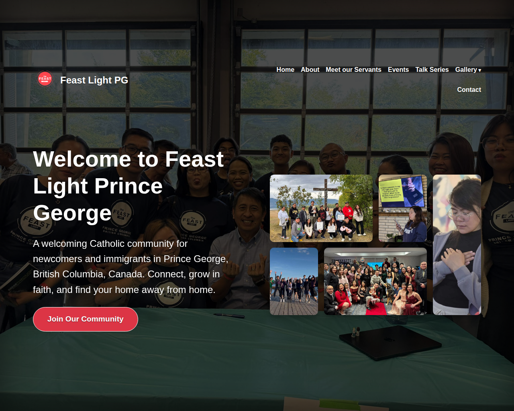

Case Study
Feast Light Prince George
Building a centralized online home for ministry updates, events, and community engagement.
Project Overview
Designed and developed the official website for Feast Light Prince George to establish an online presence, centralize ministry information, and support community engagement. The website serves as the primary source for events, announcements, and ministry updates while complementing communication through the organization's Facebook page.

Objectives
- Establish a professional online presence.
- Improve access to ministry information and upcoming events.
- Support Facebook-based communication with a dedicated website.
- Increase visibility through search engine optimization (SEO).
My Role
- Website planning and development
- UI/UX design
- Content creation and page structure
- Search engine optimization (SEO)
- Performance optimization
- Google Search Console setup
- Website maintenance and updates
Key Features
- Responsive design for desktop, tablet, and mobile devices
- Event and announcement pages
- Ministry information and contact page
- Image galleries
- Fast-loading pages
- SEO-friendly page structure and metadata
Technologies Used
- WordPress
- Bluehost for hosting
- HTML5
- CSS3
- JavaScript
- Google Search Console
- On-page SEO
Outcome
Jan 2026
Website launched
100%
Responsive across devices
SEO
On-page optimization complete
- Successfully launched the website in January 2026.
- Created a centralized platform for ministry updates and event information.
- Improved online visibility through SEO best practices.
- Enhanced accessibility for members and visitors across all devices.